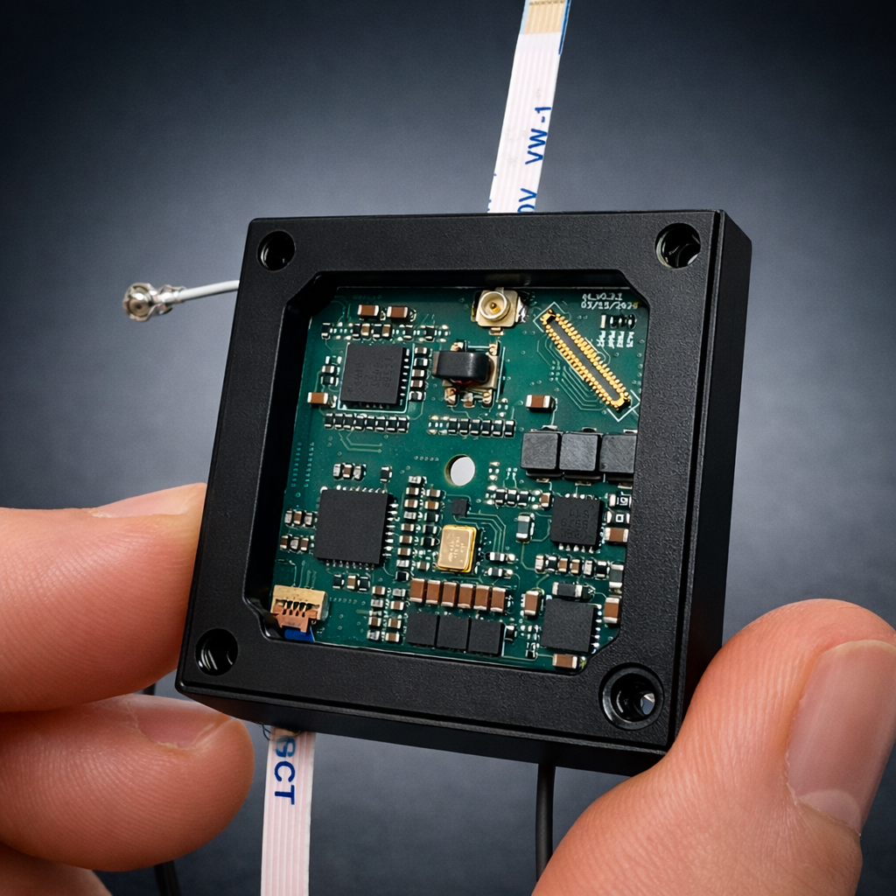
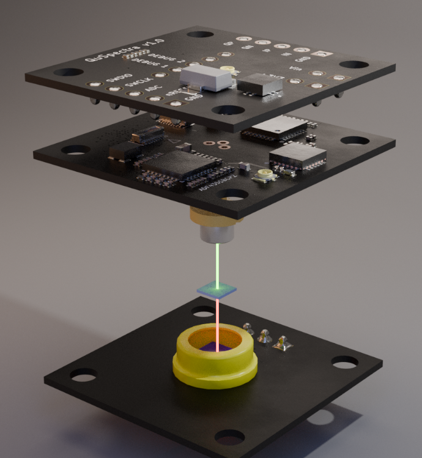
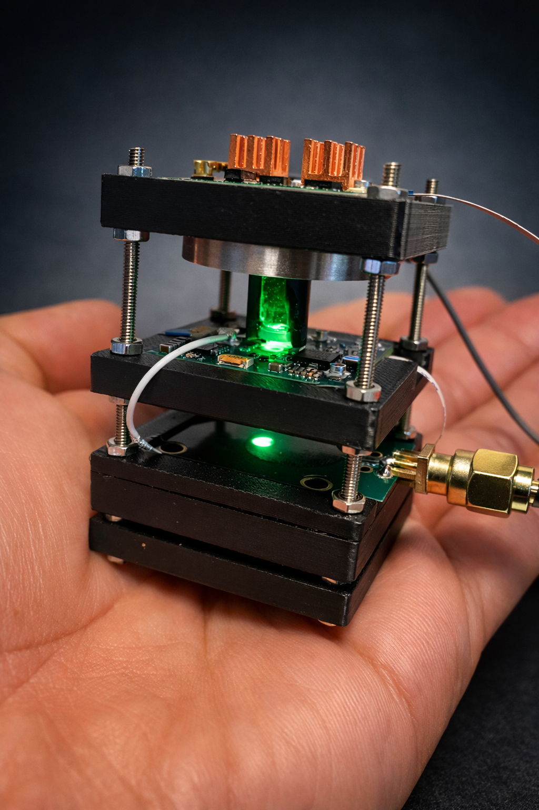

We bring NMR capabilities into a portable format. No superconducting magnets, no liquid helium, no dedicated facility infrastructure.
Powered by diamond quantum sensing, QuSpectra delivers high-sensitivity molecular analysis from very small sample volumes.

Identify compounds and concentrations across liquids, solids, and gases — measured against a quantum reference, no reagents required.
Screen for compounds at trace concentrations — at the point-of-need, far from any laboratory.

Our integrated system controls and reads the quantum sensor. Changes in the magnetic field sensed by the diamond are read by the optical detector.
01 laser pulse
02 quantum diamond sensor
03 sample aperture & detector
Detects weak magnetic signatures from samples.
Handles and positions samples directly on the sensor. No preparation, no reagents, no consumables.
Converts optical readout into molecular fingerprints.

Current platform prototype. Figures below are design targets.
QuSpectra is developing its portable quantum sensors with support from NASA's Small Business Innovation Research program — building toward instruments that can analyze chemistry anywhere, on Earth and beyond.
Get in touch →